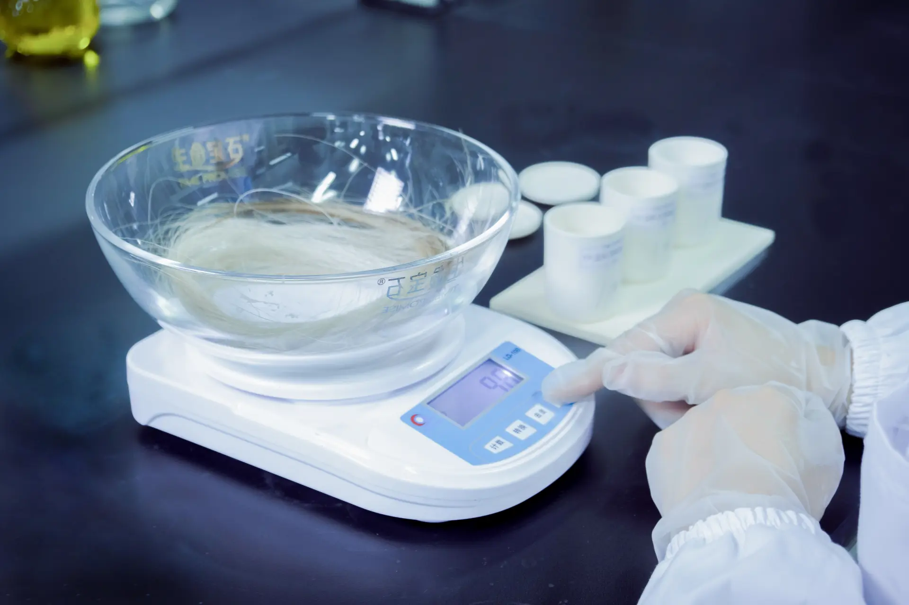
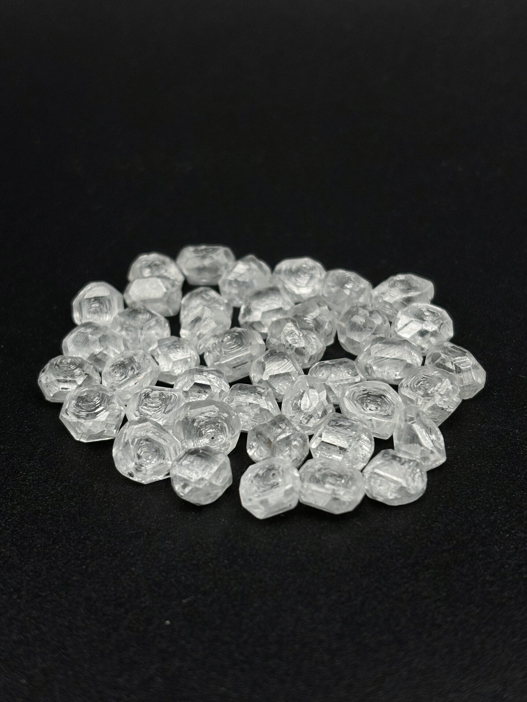

I've watched this process maybe four hundred times. Not from a desk—I'm talking about standing next to the technicians while they work. And the thing that surprises people most is how uneven the timeline feels. Some stages crawl. Some race. Some look like nothing is happening at all.
What follows is the real schedule we run at BioGem Lab. Not a marketing infographic. A field report. If you're a partner evaluating whether memorial diamonds fit your service portfolio, or a pet owner trying to understand what you're paying for, this is the unvarnished version.
TL;DR — Quick Summary
This is a real field report from the lab floor, not a marketing timeline. Memorial diamond production is uneven — some stages crawl while others race. The 60-day cycle covers sample intake and pre-treatment, carbon extraction through thermal decomposition, graphitization, HPHT synthesis, and final cutting and certification. The real schedule helps partners understand what actually happens to their customers' samples at each stage.
Days 1-3: The Sample Lands
A courier bag arrives. Inside: a Ziploc with hair, sometimes a handwritten note, occasionally a collar tag tucked in for safekeeping. We photograph everything for the traceability log—this is where the CCIC chain of custody starts—then the technician weighs the sample on a precision balance.

Sample intake and weighing. Every batch gets a unique traceability ID before anything else happens.
Minimum viable weight is about 5 grams of clean hair. Less than that, and carbon yield becomes unpredictable. We've had 3-gram samples work, and 8-gram samples fail because the hair was coated in flea treatment chemicals. There's no reliable rule except: more is better, clean is essential.
The hair goes into a pre-treatment bath—acetone and distilled water—to strip oils, dirt, and anything the family pet rolled in. Then it dries overnight in a low-temperature oven. By Day 3, we have a dry, weighed, documented sample ready for extraction.
Days 4-14: Carbon Extraction
This is where most of the mythology comes from. "They burn the hair and get carbon." Not exactly.
Hair is roughly 50% carbon by mass, but it's locked into keratin protein structures. You can't just torch it and collect soot. We use a two-stage process: thermal decomposition in a controlled-atmosphere furnace, followed by chemical purification. The first stage happens at around 600°C in nitrogen. The organic material breaks down, leaving a carbon-rich residue mixed with ash and trace minerals.
Then comes the acid wash. Hydrochloric and nitric acids, carefully titrated, dissolve the inorganic contaminants. What's left is amorphous carbon powder—black, extremely fine, surprisingly light. A 10-gram hair sample typically yields 1.5 to 2.5 grams of usable carbon. The rest literally went up in smoke.
The powder gets pressed into a small graphite mold and inspected under a stereomicroscope. If the carbon looks uniform and dark, we move forward. If it's flaky, grayish, or contains visible impurities, we run a second purification cycle. That adds 2-3 days. It happens maybe one in fifteen batches.
Reality check: This stage takes 10-14 days not because the chemistry is slow, but because it requires iteration. You can't rush purity testing. Every shortcut here shows up in the final diamond as inclusions or cloudy zones.
Days 15-21: Graphitization
Now the carbon powder becomes graphite. This matters more than most people realize.
Amorphous carbon won't turn into diamond under HPHT conditions. It needs an ordered hexagonal crystal structure first. We load the purified carbon into a quartz crucible and heat it to 2,600–3,000°C in an argon atmosphere. The carbon atoms rearrange into graphite—a process called graphitization.
Graphitization furnace loading. The crucible will sit at ~2,400°C for 72 hours.
The furnace runs for 72 hours straight. You can't open it mid-cycle—the temperature shock would ruin the crystal formation. So the technician checks it once at startup, then waits. For three days, the most expensive piece of equipment in the lab is doing nothing except holding a temperature.
When the cycle finishes, we have a dense graphite cylinder. Density check: should be above 1.6 g/cm³. Anything less means incomplete conversion, and we run the cycle again. At this stage, about 95% of batches pass on the first try.
Days 22-45: HPHT Synthesis
This is the stage everyone imagines. Big press. Extreme heat. Diamond.
The graphite cylinder gets loaded into a cubic press cell with a metal catalyst solvent—typically a nickel-manganese-cobalt alloy. The cell goes into a six-anvil HPHT press capable of generating 5 GPa (roughly 50,000 times atmospheric pressure) while heating to 1,300–1,600°C.
Here's the part brochures don't mention: the press runs for 14 to 21 days, and for most of that time, you have no idea if it's working.
We can't open the cell to peek. The pressure and temperature sensors give us readings, but they don't tell us whether the carbon is crystallizing correctly, whether the catalyst is distributing evenly, or whether a micro-crack is forming in the growth cell. The technician monitors the power draw and temperature curve, looking for anomalies. Otherwise, it's a waiting game.
At the end of the cycle, we decompress slowly—over 12 hours. Rapid decompression would shatter the diamond. When the cell opens, we typically find a raw diamond crystal embedded in the catalyst metal, surrounded by unconverted graphite. The crystal is yellowish-brown, rough, and looks nothing like jewelry.

Raw diamond crystal immediately after HPHT synthesis. The surrounding metal catalyst and graphite will be removed in the next stage.
Typical raw yield: 0.3 to 0.5 carats of usable crystal per batch. If the partner ordered a 1-carat finished diamond, we need two or sometimes three synthesis runs from the same carbon stock. That's built into our timeline—why some 1-carat orders push toward the 60-day upper limit while 0.25-carat orders finish closer to 45 days.
Days 46-55: Cutting and Polishing
Once the raw crystal is clean, a diamond cutter examines it under magnification. The goal is to maximize carat weight while hitting target proportions. Memorial diamonds aren't graded on cut the same way jewelry diamonds are—there's no "ideal" standard for a round brilliant—but we still aim for excellent symmetry and polish because it affects brilliance.
Cutting takes 3-5 days. Polishing another 2-3. The cutter works slowly; one wrong angle and a 0.5-carat stone becomes a 0.35-carat stone. We've had cutters spend half a day deciding whether to accept a small inclusion near the girdle or recut to eliminate it.
Most memorial diamonds we produce are round brilliants. Partners occasionally request princess, cushion, or emerald cuts, but those require larger raw crystals and add 3-5 days. Unless the partner specifically requests a fancy shape, round is the default. It's the most efficient use of the raw material.
Days 56-60: Grading, Certification, and Shipping
The finished stone goes to the grading bench. We measure carat weight, color grade, clarity, and proportions. For Chinese-market orders, we issue a China Gemstone Certificate through our partner lab. For international partners, we can coordinate IGI grading at their request, though we don't treat IGI as a default—it's an optional add-on.
Every stone gets a CCIC traceability code. The partner (or their client) can scan the QR code and see the batch ID, carbon source documentation, synthesis date, and lab location. It's not romantic, but it is rigorous. For a B2B partner selling to grieving families, that rigor is worth more than any marketing copy.
The diamond goes into a micro-padded container, then a branded or white-label box—depending on the partner's preference—then FedEx. Tracking number to the partner. Typical transit: 3-5 days to North America, 2-3 days to Asia-Pacific.
Why Timelines Vary
We've finished batches in 48 days. We've had others stretch to 72. The biggest variables:
Carbon quality. Hair that's been chemically treated—dyed, permed, heavily conditioned—yields less carbon and requires extra purification cycles. We always tell partners: ask the family for hair from before any treatment, or from a brush rather than a clipped sample.
Synthesis luck. HPHT diamond growth has a stochastic element. Same carbon, same press, same parameters—two runs can produce different crystal sizes. We compensate by running multiple synthesis cycles when needed, but that adds days.
Cutting decisions. A raw crystal with an unexpected inclusion near the center forces the cutter to choose between a smaller clean stone or a larger included one. We contact the partner for that decision. Most choose clean and smaller. The conversation adds a day or two.
What Partners Should Know
If you're a pet cremation service adding memorial diamonds to your offerings, the 60-day timeline affects how you set client expectations. Don't promise 30 days. Don't promise exact dates. Promise "approximately 60 days from confirmed sample receipt, with progress updates at carbon extraction, synthesis start, and cutting." That framing is honest and it protects you.
Also: build buffer into your pricing. If a batch requires an extra synthesis run, we absorb that cost. Our wholesale pricing includes the full process, not per-attempt charges. Partners don't need to explain unexpected delays to families because there aren't surprise invoices.
Want to see the full production cycle overview or learn how carbon actually becomes diamond at the molecular level? Those articles cover the science in more depth. This one was about the calendar.
Frequently Asked Questions
Why does memorial diamond production take 60 days?
The 60-day timeline breaks down into: carbon extraction and purification (10-14 days), graphitization (7-10 days), HPHT diamond synthesis (18-25 days), cutting and polishing (7-10 days), and grading/certification (5-7 days). HPHT synthesis cannot be rushed—diamond crystal formation requires sustained temperature and pressure over time.
Can the production timeline be shortened?
Not meaningfully. The physics of diamond growth sets a hard floor. HPHT synthesis at 1,400°C and 5 GPa requires 18-25 days for a stable crystal. Carbon extraction and graphitization also have minimum durations for complete conversion. Labs promising significantly shorter times typically skip steps or use lower-quality processes.
What happens if a sample fails carbon extraction?
Sample failure is rare with proper collection, but it can happen if the hair is contaminated with dyes, chemicals, or insufficient carbon content. In our process, we detect insufficient carbon yield during Days 4-7 and contact the partner immediately. We typically request a supplementary sample rather than abandoning the batch.
Is every diamond the same quality after 60 days?
No. Diamond quality varies based on the carbon source, synthesis conditions, and random crystal growth factors. Two diamonds from the same sample batch can differ in color, clarity, and size. This is why we provide individual grading reports for each finished stone rather than generic certificates.
Li Lihua — Chief Scientist
Patent inventor ZL 201010565778.9. View profile →
Ready to Add Memorial Diamonds to Your Service?
White-label production. 60-day turnaround. Your brand, your certificate, your client relationship.
Related Articles
Hair to Diamond Process
Step-by-step guide through carbon extraction, graphitization, HPHT synthesis, and certification.
Production Cycle Overview
Understanding the complete 60-day memorial diamond manufacturing cycle from intake to delivery.
How Carbon Becomes Diamond
The reconstructive phase transformation from graphite hexagonal lattice to diamond tetrahedral lattice.